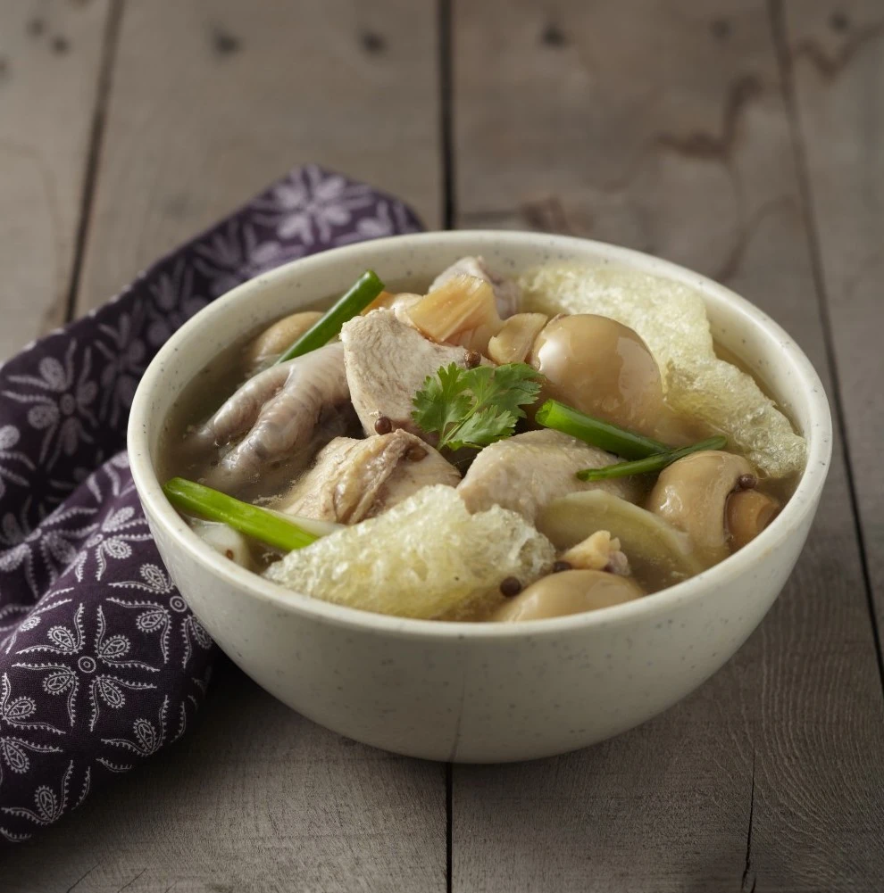

Time needed: 25 mins
Ingredients
- Sprinkle fried shallots and lard over the noodles. Serve immediately.
- 1 large thumb young ginger, thinly sliced
- 3 stalks spring onions, sliced about an inch long
- 1 tsp top-grade sesame oil
- 1 tsp canola oil
- 6 cloves garlic, lightly bashed with skin removed
- 1/2 tsp coriander seeds, bashed in mortar and pestle
- 1 tsp white peppercorns, bashed in mortar and pestle
- 2 large dried scallops, pre-soaked in cold water for 10-15 minutes
- 2 litres water
- 2 tins mushrooms, drained
- 3 large strips fish maw (Prepare with hot, not boiling water. Soak in the hot water for 30 minutes and rinse under cold water before cutting into strips)
- A pinch of salt, to taste
- Coriander leaves, for garnish
Instructions
- Add canola and sesame oil into a large soup pot in high heat. Turn down to medium heat when smoking.
- Add ginger, garlic, coriander seeds and peppercorns. Fry until fragrant.
- Add cut chicken and fry for 7 to 10 minutes. Coat all the chicken pieces with the fragrant oil and spices.
- Add water and turn up the heat to high.
- Bring to boil, then turn heat down to medium low.
- Add dried scallops and mushrooms. Add a pinch of salt.
- Cover the pot for one hour.
- Add the fish maw at the end of the hour after bringing the heat down to a simmer.
- Garnish with coriander leaves.
- Serve with plain rice when ready, alongside the usual condiments of garlic chilli and quality dark soy sauce with heaps of minced ginger.